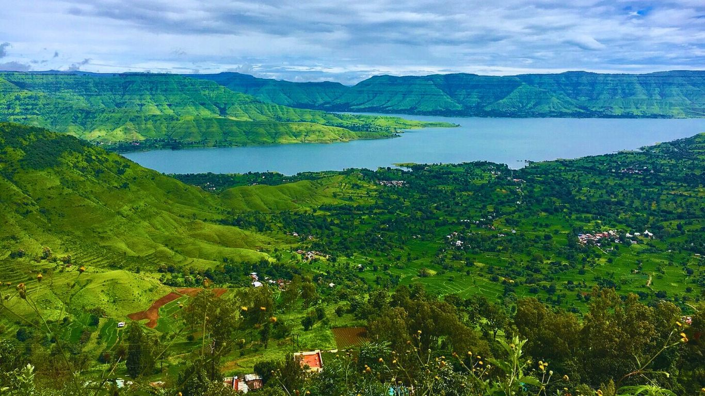

Mahabaleshwar is a famous hill station in the Western Ghats of Maharashtra, India. Set at 1,372 meters above sea level, it is known for its cool weather, lush green valleys, and vast strawberry farms.